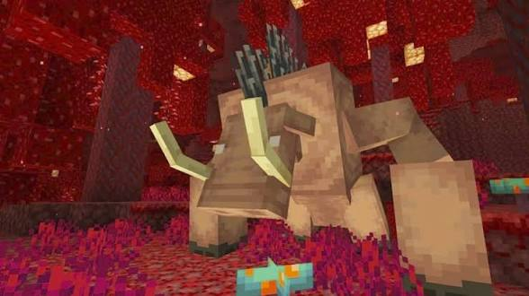
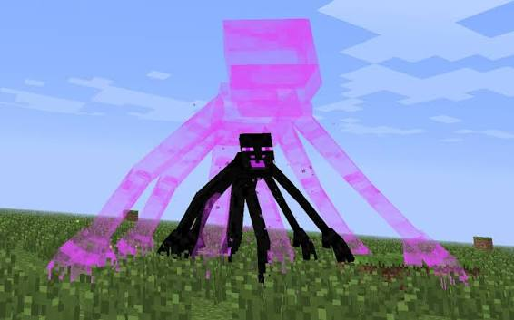

Mutant Creatures Addon is one of the most exciting Minecraft Pocket Edition addons ever created. This addon adds giant mutant mobs, dangerous boss fights and powerful creatures into your survival world.

The addon introduces giant zombies, mutant skeletons, explosive creepers and many dangerous creatures.
Players can experience difficult survival battles against massive mutant bosses.

The addon works smoothly on many Android devices and supports modern Minecraft Pocket Edition versions.
Download all required files below.
Download Main Files